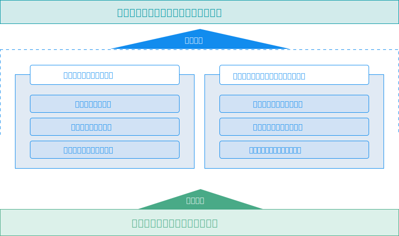

组织架构
研究院在理事会领导下实行执行院长负责制，根据理事会决议，由执行院长主持召开的院务会负责管理整个研究院的运营工作，同时对研究院重大事项做出决策。专家咨询团队为研究院的管理提供辅助决策作用，通过顾问、咨询、评审、评估等行为科学引导研究院的发展。
专家团队
研究院成立伊始，即聘请了李国杰院士（中国工程院院士）、陈勇院士（中国工程院院士）、吴一戎院士（中国科学院院士）、郭毅可教授（英国帝国理工大学大数据研究所所长）以及中国科学院计算技术研究所徐志伟、季统凯等研究员组成的战略指导专家委员会。这些院士、专家均是国内外最顶级的大数据专家，为研究院的发展出谋划策。
科研方向
研究院主要面向新兴产业发展、传统企业转型升级两个领域。未来五年，研发中心技术研究重点放在云计算与大数据、物联网、移动互联的交叉技术研究上。
